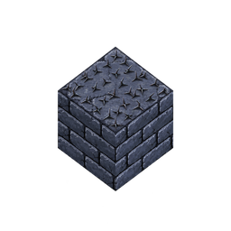
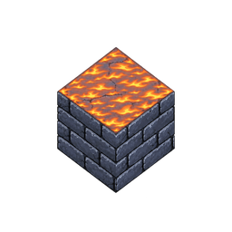
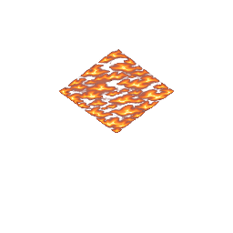
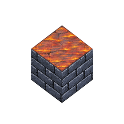

Ловушка 01
3 позы · одно раскрытие
Готово к раскрытию
Происхождение кадров
Исходная плита и шипы из кадров PixelLab 00 → 03 → 08; камень вне масок неподвижен. Сырой кадр PixelLab · Сборка и ограничения · Маски и SHA-256.
intoDeDung · выбор анимации
Кандидаты для выбора; в сцену не подключены.
У ловушки и кальтропов справа показана сборка из неизменённых пикселей выбранных кадров PixelLab. Огонь пока показан статично: движение ещё не подобрано. Выделенные языки огня 24 — вход для новой пробы, а не готовая анимация.
Исходная плита и шипы из кадров PixelLab 00 → 03 → 08; камень вне масок неподвижен. Сырой кадр PixelLab · Сборка и ограничения · Маски и SHA-256.

Два блика по 0,3 с из старых кадров PixelLab; между ними и на стыке — исходная неподвижная плита. Верхний второй кадр удерживает блик. Сырой кадр PixelLab · Сборка и ограничения · Маски и SHA-256.


Выделенные языки — вход для следующей генерации PixelLab, а не результат движения. Архивная long01 проба не годится: фактура скачет между сегментами. Неудачная проба · Сырой кадр PixelLab · Подготовка.

Архивная long01 проба остановлена; она не предлагается как готовая анимация. Неудачная проба · Сырой кадр PixelLab · Подготовка.